CODING AGENTS AS PIXEL WORLD MODELS
traex/DeepSeek-V4.1-Flash · 0035
点击播放 · 原生 RGB 像素
逐轮保存的候选
回放视频、检查图与代码变化。
每份候选均可单独播放。实际图片检查记录在下方工具轨迹中。
候选 01播放与检查图
点击播放 · 原生 RGB 像素
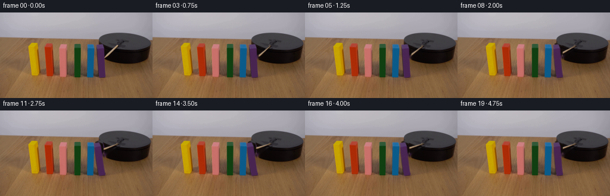
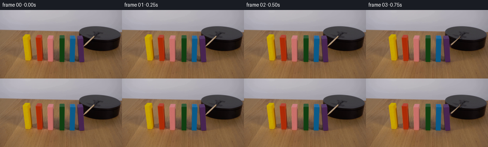
展开代码变化
--- 上一保存版本
+++ 本次保存版本
@@ -0,0 +1,248 @@
+from pathlib import Path
+
+import cv2
+import numpy as np
+from PIL import Image
+
+import artifact_io
+
+
+ROOT = Path(__file__).resolve().parent
+FRAME_COUNT = 20
+WIDTH = 256
+HEIGHT = 144
+
+# The wooden striker is attached near the centre of the black platform.
+ROD_PIVOT = np.array([199.0, 57.2], dtype=np.float32)
+ROD_TIP = np.array([175.4, 76.0], dtype=np.float32)
+
+# Rightmost (first-reached) wooden block.
+PURPLE_POLYGON = np.array(
+ [
+ [163.4, 53.0],
+ [172.6, 49.8],
+ [178.4, 51.2],
+ [178.4, 104.1],
+ [172.0, 109.7],
+ [163.4, 109.7],
+ ],
+ dtype=np.float32,
+)
+PURPLE_PIVOT = np.array([171.4, 108.2], dtype=np.float32)
+PURPLE_BBOX = (160, 46, 183, 114)
+ROD_BBOX = (170, 49, 205, 84)
+
+
+def _polygon_alpha(polygon, bbox, scale=4):
+ x0, y0, x1, y1 = bbox
+ points = (polygon - np.array([x0, y0], dtype=np.float32)) * scale
+ mask = np.zeros(((y1 - y0) * scale, (x1 - x0) * scale), dtype=np.uint8)
+ cv2.fillPoly(mask, [np.round(points).astype(np.int32)], 255)
+ mask = cv2.resize(mask, (x1 - x0, y1 - y0), interpolation=cv2.INTER_AREA)
+ return mask.astype(np.float32) / 255.0
+
+
+def _capsule_alpha(shape, p0, p1, half_width):
+ yy, xx = np.indices(shape, dtype=np.float32)
+ segment = p1 - p0
+ length_sq = float(segment @ segment)
+ projection = ((xx - p0[0]) * segment[0] + (yy - p0[1]) * segment[1]) / length_sq
+ projection = np.clip(projection, 0.0, 1.0)
+ nearest = p0 + projection[..., None] * segment
+ distance = np.hypot(xx - nearest[..., 0], yy - nearest[..., 1])
+ return np.clip(half_width + 0.6 - distance, 0.0, 1.0).astype(np.float32)
+
+
+def _rgba_crop(rgb, alpha, bbox):
+ x0, y0, x1, y1 = bbox
+ color = rgb[y0:y1, x0:x1].astype(np.float32)
+ if alpha.shape == color.shape[:2]:
+ a = alpha[:, :, None]
+ else:
+ a = alpha[y0:y1, x0:x1, None]
+ return np.concatenate([color * a, a * 255.0], axis=2)
+
+
+def _make_assets(rgb):
+ rod_alpha = _capsule_alpha(
+ (HEIGHT, WIDTH),
+ ROD_PIVOT,
+ ROD_TIP,
+ 2.15,
+ )
+ purple_alpha = _polygon_alpha(PURPLE_POLYGON, PURPLE_BBOX)
+
+ # Remove the tan tip from the block sprite while retaining its real facets.
+ purple_source = rgb.copy()
+ x0, y0, x1, y1 = PURPLE_BBOX
+ local_rod = rod_alpha[y0:y1, x0:x1]
+ local_purple = purple_alpha
+ overlap = ((local_rod > 0.05) & (local_purple > 0.05)).astype(np.uint8) * 255
+ overlap = cv2.dilate(overlap, np.ones((3, 3), np.uint8), iterations=1)
+ if overlap.any():
+ patch = cv2.inpaint(
+ cv2.cvtColor(purple_source[y0:y1, x0:x1], cv2.COLOR_RGB2BGR),
+ overlap,
+ 3,
+ cv2.INPAINT_TELEA,
+ )
+ purple_source[y0:y1, x0:x1] = cv2.cvtColor(patch, cv2.COLOR_BGR2RGB)
+ purple_rgba = _rgba_crop(purple_source, purple_alpha, PURPLE_BBOX)
+ rod_rgba = _rgba_crop(rgb, rod_alpha, ROD_BBOX)
+
+ removal = np.zeros((HEIGHT, WIDTH), dtype=np.uint8)
+ cv2.fillPoly(
+ removal,
+ [np.round(PURPLE_POLYGON * 4).astype(np.int32)],
+ 255,
+ )
+ removal = cv2.resize(removal, (WIDTH, HEIGHT), interpolation=cv2.INTER_AREA)
+ removal[rod_alpha > 0.04] = 255
+ removal = cv2.dilate(removal, np.ones((3, 3), np.uint8), iterations=1)
+ clean_bgr = cv2.inpaint(
+ cv2.cvtColor(rgb, cv2.COLOR_RGB2BGR),
+ removal,
+ 3,
+ cv2.INPAINT_TELEA,
+ )
+ clean = cv2.cvtColor(clean_bgr, cv2.COLOR_BGR2RGB)
+ return clean, purple_rgba, rod_rgba
+
+
+def _transform_sprite(rgba, bbox, pivot, angle, translation=(0.0, 0.0)):
+ canvas = np.zeros((HEIGHT, WIDTH, 4), dtype=np.float32)
+ x0, y0, x1, y1 = bbox
+ canvas[y0:y1, x0:x1] = rgba
+ matrix = cv2.getRotationMatrix2D((float(pivot[0]), float(pivot[1])), angle, 1.0)
+ matrix[0, 2] += translation[0]
+ matrix[1, 2] += translation[1]
+ return cv2.warpAffine(
+ canvas,
+ matrix,
+ (WIDTH, HEIGHT),
+ flags=cv2.INTER_LINEAR,
+ borderMode=cv2.BORDER_CONSTANT,
+ borderValue=(0, 0, 0, 0),
+ )
+
+
+def _over(base, rgba):
+ alpha = np.clip(rgba[:, :, 3:4] / 255.0, 0.0, 1.0)
+ return np.clip(
+ rgba[:, :, :3] + base.astype(np.float32) * (1.0 - alpha),
+ 0.0,
+ 255.0,
+ )
+
+
+def _add_block_shadow(frame, tilt):
+ shadow = np.zeros((HEIGHT, WIDTH), dtype=np.float32)
+ shift = int(round(0.18 * tilt))
+ cv2.ellipse(
+ shadow,
+ (170 - shift, 110),
+ (10, 3),
+ 0,
+ 0,
+ 360,
+ 1.0,
+ -1,
+ cv2.LINE_AA,
+ )
+ shadow = cv2.GaussianBlur(shadow, (0, 0), 1.6)[:, :, None]
+ shadow = np.clip(shadow * 0.22, 0.0, 0.22)
+ return frame * (1.0 - shadow) + np.array([60, 43, 46], np.float32) * shadow
+
+
+def generate():
+ first = np.asarray(Image.open(ROOT / "first_frame.png").convert("RGB"))
+ clean, purple, rod = _make_assets(first)
+
+ # At 4 fps, most of the five-second shot is the visible sweep and recoil.
+ rod_angle = np.array(
+ [
+ 0.0,
+ 0.0,
+ 0.0,
+ 0.6,
+ 2.1,
+ 4.3,
+ 7.1,
+ 10.0,
+ 13.0,
+ 16.0,
+ 18.6,
+ 20.8,
+ 22.4,
+ 23.4,
+ 24.0,
+ 24.2,
+ 24.0,
+ 23.6,
+ 23.1,
+ 22.7,
+ ],
+ dtype=np.float32,
+ )
+ block_tilt = np.array(
+ [
+ 0.0,
+ 0.0,
+ 0.0,
+ 0.0,
+ 0.0,
+ 0.2,
+ 0.8,
+ 1.7,
+ 2.9,
+ 4.1,
+ 5.1,
+ 5.8,
+ 6.1,
+ 6.0,
+ 5.6,
+ 5.0,
+ 4.2,
+ 3.4,
+ 2.7,
+ 2.2,
+ ],
+ dtype=np.float32,
+ )
+
+ frames = []
+ for index in range(FRAME_COUNT):
+ if index == 0:
+ frames.append(first.copy())
+ continue
+ if index < 3:
+ frames.append(first.copy())
+ continue
+
+ frame = _add_block_shadow(clean.astype(np.float32), block_tilt[index])
+
+ # OpenCV's negative screen angle is the clockwise motion seen by camera.
+ striker = _transform_sprite(
+ rod,
+ ROD_BBOX,
+ ROD_PIVOT,
+ -float(rod_angle[index]),
+ )
+ frame = _over(frame, striker)
+
+ # Small translation is the contact impulse; rotation pivots at the base.
+ block = _transform_sprite(
+ purple,
+ PURPLE_BBOX,
+ PURPLE_PIVOT,
+ float(block_tilt[index]),
+ translation=(-0.42 * block_tilt[index] / 6.1, 0.0),
+ )
+ frame = _over(frame, block)
+ frames.append(np.clip(np.rint(frame), 0, 255).astype(np.uint8))
+
+ return np.stack(frames, axis=0)
+
+
+if __name__ == "__main__":
+ artifact_io.save(generate(), ROOT)
可观测工具轨迹
实际执行的命令与返回图片。
命令 1exit 0
/bin/bash -c "pwd && rg --files -g 'prompt.txt' -g 'GENERATION_RULES.md' -g 'first_frame.png' -g '"'!**/.git/**'"'"
命令 2exit 0
/bin/bash -c "sed -n '1,240p' prompt.txt"
命令 3exit 0
/bin/bash -c "sed -n '1,280p' GENERATION_RULES.md"
命令 4exit 0
/bin/bash -c "find . -maxdepth 2 -type f -not -path './.git/*' -printf '%p\\n' | sort | head -200"
命令 5exit 127
/bin/bash -c "file first_frame.png && identify -verbose first_frame.png | sed -n '1,80p'"
命令 6exit 0
/bin/bash -c "sed -n '1,260p' artifact_io.py && sed -n '1,240p' player_template.html"
命令 7exit 0
/bin/bash -c "python - <<'PY'
from PIL import Image
im=Image.open('first_frame.png').convert('RGB')
print(im.size)
# list selected pixels / dominant colors
from collections import Counter
c=Counter(im.getdata())
for col,n in c.most_common(30): print(col,n)
PY"命令 8exit 0
/bin/bash -c "python - <<'PY'
from PIL import Image
im=Image.open('first_frame.png')
im.crop((145,25,235,100)).resize((720,600), Image.Resampling.NEAREST).save('.tmp/mechanism_crop.png')
im.crop((35,35,195,130)).resize((800,475), Image.Resampling.NEAREST).save('.tmp/blocks_crop.png')
PY"命令 9exit 0
/bin/bash -c "python - <<'PY'
try:
import cv2; print('cv2', cv2.__version__)
except Exception as e: print('no cv2',e)
try:
import scipy; print('scipy',scipy.__version__)
except Exception as e: print('no scipy',e)
try:
import skimage; print('skimage',skimage.__version__)
except Exception as e: print('no skimage',e)
PY"命令 10exit 0
/bin/bash -c "python - <<'PY'
from PIL import Image, ImageDraw, ImageFont
im=Image.open('first_frame.png').convert('RGB').resize((1024,576),Image.Resampling.NEAREST)
d=ImageDraw.Draw(im)
for x in range(0,257,10):
xx=x*4
d.line([(xx,0),(xx,576)],fill=(255,255,0),width=1)
d.text((xx+2,2),str(x),fill=(255,255,0))
for y in range(0,145,10):
yy=y*4
d.line([(0,yy),(1024,yy)],fill=(0,255,255),width=1)
d.text((2,yy+2),str(y),fill=(0,255,255))
im.save('.tmp/grid.png')
PY"命令 11exit 0
/bin/bash -c "python - <<'PY'
from PIL import Image
import numpy as np
im=np.array(Image.open('first_frame.png').convert('RGB'))
# Print rough bbox for saturated pixels by region
regions={'yellow':(40,90,45,115),'orange':(70,100,45,115),'pink':(95,120,45,115),'green':(120,145,45,115),'blue':(143,170,45,115),'purple':(163,186,45,115)}
for k,(x0,x1,y0,y1) in regions.items():
a=im[y0:y1,x0:x1]
mx=a.max(2); mn=a.min(2); sat=mx-mn
m=(sat>30)&(mx<240)
ys,xs=np.where(m)
print(k, (x0+xs.min(),y0+ys.min(),x0+xs.max(),y0+ys.max()) if len(xs) else None, 'med',np.median(a[m],axis=0) if len(xs) else None)
PY"命令 12exit 0
/bin/bash -c "python - <<'PY'
from PIL import Image
im=Image.open('first_frame.png')
im.crop((160,45,195,115)).resize((350,700),Image.Resampling.NEAREST).save('.tmp/purple_crop.png')
PY"命令 13exit 0
/bin/bash -c "python - <<'PY'
from PIL import Image
import numpy as np
im=np.array(Image.open('first_frame.png').convert('RGB'))
for y in [45,48,50,52,55,60,70,80,90,100,105,108,110,112]:
print('\\ny',y)
for x in range(158,190,4):
print(x,tuple(im[y,x]),end='; ')
print()
PY"命令 14exit 0
/bin/bash -c "python - <<'PY'
from PIL import Image
im=Image.open('first_frame.png')
im.crop((160,45,225,100)).resize((780,660),Image.Resampling.NEAREST).save('.tmp/contact_crop.png')
PY"命令 15exit 0
/bin/bash -c "python - <<'PY'
from PIL import Image
im=Image.open('first_frame.png')
# enlarge platform only
im.crop((164,30,256,105)).resize((920,750),Image.Resampling.NEAREST).save('.tmp/platform_crop.png')
PY"命令 16exit 0
/bin/bash -c "python - <<'PY' import cv2 print(hasattr(cv2,'xphoto')) print([n for n in dir(cv2.xphoto) if 'inpaint' in n.lower()] if hasattr(cv2,'xphoto') else '') PY"
命令 17exit 0
/bin/bash -c "python - <<'PY'
from PIL import Image
im=Image.open('first_frame.png')
im.crop((155,35,205,115)).resize((750,1200),Image.Resampling.NEAREST).save('.tmp/purple_contact_big.png')
PY"命令 18exit 1
/bin/bash -c "python - <<'PY'
import cv2, numpy as np
im=cv2.imread('first_frame.png')
roi=im[45:115,158:183]
hsv=cv2.cvtColor(roi,cv2.COLOR_BGR2HSV)
# purple hue approx 145 in cv2 (BGR)
for lo,hi in [(120,170),(130,170),(140,175)]:
m=((hsv[:,:,0]>=lo)&(hsv[:,:,0]<=hi)&(hsv[:,:,1]>35)&(hsv[:,:,2]>20)).astype(np.uint8)*255
n,lab,stats,c=cv2.connectedComponentsWithStats(m,8)
print(lo,hi,[(tuple(s),int(a)) for s,a in zip(stats[1:],c[1:])])
cv2.imwrite(f'.tmp/mask_{lo}.png',m)
PY"命令 19exit 1
/bin/bash -c "python - <<'PY'
import cv2, numpy as np
im=cv2.imread('first_frame.png')
roi=im[45:115,158:183]
hsv=cv2.cvtColor(roi,cv2.COLOR_BGR2HSV)
for lo,hi in [(120,170),(130,170),(140,175)]:
m=((hsv[:,:,0]>=lo)&(hsv[:,:,0]<=hi)&(hsv[:,:,1]>35)&(hsv[:,:,2]>20)).astype(np.uint8)*255
n,lab,stats,c=cv2.connectedComponentsWithStats(m,8)
print(lo,hi,[(s.tolist(),int(a)) for s,a in zip(stats[1:],c[1:])])
cv2.imwrite(f'.tmp/mask_{lo}.png',m)
PY"命令 20exit 1
/bin/bash -c "python - <<'PY'
import cv2, numpy as np
im=cv2.imread('first_frame.png')
roi=im[45:115,158:183]
hsv=cv2.cvtColor(roi,cv2.COLOR_BGR2HSV)
for lo,hi in [(120,170),(130,170),(140,175)]:
m=((hsv[:,:,0]>=lo)&(hsv[:,:,0]<=hi)&(hsv[:,:,1]>35)&(hsv[:,:,2]>20)).astype(np.uint8)*255
n,lab,stats,c=cv2.connectedComponentsWithStats(m,8)
print(lo,hi,[(stats[i].tolist(),int(c[i])) for i in range(1,n)])
cv2.imwrite(f'.tmp/mask_{lo}.png',m)
PY"命令 21exit 0
/bin/bash -c "python - <<'PY'
import cv2, numpy as np
im=cv2.imread('first_frame.png')
roi=im[45:115,158:183]
hsv=cv2.cvtColor(roi,cv2.COLOR_BGR2HSV)
m=((hsv[:,:,0]>=120)&(hsv[:,:,0]<=170)&(hsv[:,:,1]>35)&(hsv[:,:,2]>20)).astype(np.uint8)*255
n,lab,stats,c=cv2.connectedComponentsWithStats(m,8)
print(n,stats.shape,c.shape,c[:3],stats[:3])
PY"命令 22exit 0
/bin/bash -c "python - <<'PY'
import cv2, numpy as np
im=cv2.imread('first_frame.png')
roi=im[45:115,158:183]
hsv=cv2.cvtColor(roi,cv2.COLOR_BGR2HSV)
for lo,hi in [(120,170),(130,170),(140,175)]:
m=((hsv[:,:,0]>=lo)&(hsv[:,:,0]<=hi)&(hsv[:,:,1]>35)&(hsv[:,:,2]>20)).astype(np.uint8)*255
n,lab,stats,c=cv2.connectedComponentsWithStats(m,8)
print(lo,hi)
for i in range(1,n): print(i, stats[i,:].tolist(), c[i].tolist())
cv2.imwrite(f'.tmp/mask_{lo}.png',m)
PY"命令 23exit 0
/bin/bash -c "python - <<'PY'
from PIL import Image
import numpy as np
im=np.array(Image.open('first_frame.png').convert('RGB'))
# sample top and bottom surfaces of each block at safe interior columns
for x in [51,56,60,71,76,80,85,101,106,111,121,126,130,135,146,151,156,161,166,171,176]:
vals=[]
for y in [46,47,48,49,50,51,52,53,54,55,56,57,58,59,60,104,106,108]:
vals.append((y,tuple(map(int,im[y,x]))))
print(x, vals[:4], vals[-4:])
PY"命令 24exit 0
/bin/bash -c "python - <<'PY'
from PIL import Image
im=Image.open('first_frame.png')
im.crop((155,35,205,115)).resize((500,800),Image.Resampling.NEAREST).save('.tmp/crop2.png')
PY"命令 25exit 0
/bin/bash -c "python - <<'PY'
from PIL import Image
import numpy as np
im=np.array(Image.open('first_frame.png').convert('RGB'))
for y in range(48,82):
xs=[]
for x in range(168,203):
r,g,b=im[y,x]
# tan if bright warm
if r>100 and g>80 and b>45 and r>g+10 and g>b+10:
xs.append((x,(int(r),int(g),int(b))))
if xs: print(y,xs)
PY"命令 26exit 0
/bin/bash -c "python - <<'PY'
from PIL import Image
im=Image.open('first_frame.png')
im.crop((160,45,220,100)).resize((1200,1100),Image.Resampling.NEAREST).save('.tmp/contact3.png')
PY"命令 27exit 0
/bin/bash -c "python - <<'PY'
from PIL import Image
import numpy as np
im=np.array(Image.open('first_frame.png').convert('RGB'))
# exact color ranges in stick area
pts=[]
for y in range(48,90):
for x in range(170,205):
r,g,b=map(int,im[y,x])
if r>110 and g>90 and b>65 and abs(r-g)<40 and r>b+20:
pts.append((x,y,r,g,b))
print(len(pts), min(p[0] for p in pts), max(p[0] for p in pts),min(p[1] for p in pts), max(p[1] for p in pts))
for p in pts[::max(1,len(pts)//40)]:print(p)
PY"命令 28exit 0
/bin/bash -c "python - <<'PY'
from PIL import Image
import numpy as np
im=np.array(Image.open('first_frame.png').convert('RGB'))
# dump coordinate/colors every pixel in tan stick for understanding exact bbox
for y in range(52,78):
row=[]
for x in range(174,201):
r,g,b=map(int,im[y,x])
if r>110 and g>90 and b>65 and abs(r-g)<45 and r>b+15: row.append(x)
if row: print(y,min(row),max(row))
PY"命令 29exit 0
/bin/bash -c "python - <<'PY'
from PIL import Image
import numpy as np
im=np.array(Image.open('first_frame.png').convert('RGB'))
for y in range(60,90):
row=[]
for x in range(180,205):
r,g,b=map(int,im[y,x])
if 90<r<150 and 70<g<130 and 50<b<120 and r>g+8 and g>b+8: row.append((x,(r,g,b)))
if row: print(y,row[:2],row[-2:])
PY"命令 30exit 0
/bin/bash -c "python - <<'PY'
from PIL import Image
import numpy as np
im=np.array(Image.open('first_frame.png').convert('RGB'))
# crop purple region at 8x with axes marks using nearest
from PIL import ImageDraw
crop=Image.fromarray(im[48:115,158:190]).resize((640,1340),Image.Resampling.NEAREST)
d=ImageDraw.Draw(crop)
for x in range(0,32,2):
d.line([(x*20,0),(x*20,1340)],fill=(255,255,0),width=1); d.text((x*20+2,2),str(x+158),fill=(255,255,0))
for y in range(0,67,2):
d.line([(0,y*20),(640,y*20)],fill=(0,255,255),width=1); d.text((2,y*20+2),str(y+48),fill=(0,255,255))
crop.save('.tmp/purple_grid.png')
PY"命令 31exit 0
/bin/bash -c "python - <<'PY'
import cv2, numpy as np
im=cv2.imread('first_frame.png')
hsv=cv2.cvtColor(im,cv2.COLOR_BGR2HSV)
# Print hsv samples for stick tip/base and black
for p in [(196,56),(190,61),(185,66),(180,71),(176,74),(198,58),(200,64),(200,80),(170,40),(174,75),(180,75)]:
x,y=p; print(p, im[y,x].tolist(), hsv[y,x].tolist())
PY"命令 32exit 0
/bin/bash -c "python - <<'PY'
from PIL import Image
im=Image.open('first_frame.png')
im.crop((150,25,256,120)).resize((1060,950),Image.Resampling.LANCZOS).save('.tmp/platform_smooth.png')
PY"命令 33exit 0
/bin/bash -c "python - <<'PY'
import cv2,numpy as np
im=cv2.imread('first_frame.png'); hsv=cv2.cvtColor(im,cv2.COLOR_BGR2HSV)
# print pixel HSV around lower stick and base to distinguish tan wood from platform
for y in range(70,90):
out=[]
for x in range(175,202):
h,s,v=map(int,hsv[y,x])
if 8<=h<=25 and s>25 and v>35: out.append((x,h,s,v))
if out: print(y,out[:3],out[-3:])
PY"命令 34exit 0
/bin/bash -c "python - <<'PY'
import cv2,numpy as np
from PIL import Image
im=cv2.imread('first_frame.png')
polys={
'yellow':[(47,49),(57,46),(63,47),(63,105),(57,110),(47,110)],
'orange':[(72,52),(82,48),(89,49),(89,107),(82,111),(72,111)],
'pink':[(98,52),(108,47),(114,48),(114,105),(107,110),(98,109)],
'green':[(124,52),(133,48),(139,49),(139,105),(133,110),(124,109)],
'blue':[(145,52),(155,49),(160,50),(160,104),(154,109),(145,108)],
'purple':[(164,53),(173,50),(178,51),(178,104),(172,109),(164,109)],
}
mask=np.zeros(im.shape[:2],np.uint8)
for p in polys.values(): cv2.fillPoly(mask,[np.array(p,np.int32)],255)
# rod polygon along its center
cv2.fillPoly(mask,[np.array([(173,72),(197,53),(200,56),(177,78)],np.int32)],255)
# dilate 1
mask2=cv2.dilate(mask,np.ones((3,3),np.uint8),iterations=1)
clean=cv2.inpaint(im,mask2,3,cv2.INPAINT_TELEA)
cv2.imwrite('.tmp/clean.png',clean)
over=im.copy(); over[mask2>0]=(0,0,255)
cv2.imwrite('.tmp/mask_overlay.png',over)
PY"命令 35exit 0
/bin/bash -c "python - <<'PY'
import cv2,numpy as np
im=cv2.imread('first_frame.png')
mask=np.zeros(im.shape[:2],np.uint8)
# colored saturated block pixels by region
hsv=cv2.cvtColor(im,cv2.COLOR_BGR2HSV)
for x0,x1 in [(44,65),(69,91),(95,117),(121,142),(143,163),(162,181)]:
roi=((np.indices(im.shape[:2])[1]>=x0)&(np.indices(im.shape[:2])[1]<x1)&(np.indices(im.shape[:2])[0]>=45)&(np.indices(im.shape[:2])[0]<112))
sat=(hsv[:,:,1]>45)&(hsv[:,:,2]>15)
mask[roi&sat]=255
mask=cv2.dilate(mask,np.ones((3,3),np.uint8),1)
clean=cv2.inpaint(im,mask,3,cv2.INPAINT_TELEA)
cv2.imwrite('.tmp/clean_all.png',clean)
PY"命令 36exit 0
/bin/bash -c "python - <<'PY'
from PIL import Image
im=Image.open('first_frame.png')
im.crop((38,42,65,114)).resize((270,720),Image.Resampling.NEAREST).save('.tmp/yellow_grid.png')
PY"命令 37exit 0
/bin/bash -c "python - <<'PY'
import numpy as np, cv2
from PIL import Image
im=cv2.imread('first_frame.png'); hsv=cv2.cvtColor(im,cv2.COLOR_BGR2HSV)
# ranges approximate each block hue/sat/val and print bboxes
ranges=[('yellow',20,35),('orange',0,15),('pink',165,180),('green',50,80),('blue',90,115),('purple',135,165)]
for name,lo,hi in ranges:
if lo>hi:
m=((hsv[:,:,0]>=lo)|(hsv[:,:,0]<=hi))
else: m=(hsv[:,:,0]>=lo)&(hsv[:,:,0]<=hi)
m &= (hsv[:,:,1]>50)&(hsv[:,:,2]>20)
m[:42]=False; m[112:]=False
if name=='purple': m[:,:160]=False; m[:,182:]=False
elif name=='blue': m[:,:142]=False; m[:,163:]=False
elif name=='green': m[:,:120]=False; m[:,143:]=False
elif name=='pink': m[:,:94]=False; m[:,119:]=False
elif name=='orange': m[:,:68]=False; m[:,93:]=False
elif name=='yellow': m[:,:43]=False; m[:,65:]=False
ys,xs=np.where(m)
print(name, (xs.min(),ys.min(),xs.max(),ys.max()),len(xs))
PY"命令 38exit 0
/bin/bash -c "python - <<'PY'
import cv2,numpy as np
im=cv2.imread('first_frame.png'); hsv=cv2.cvtColor(im,cv2.COLOR_BGR2HSV)
Y,X=np.indices(im.shape[:2])
roi=(X>=170)&(X<=204)&(Y>=48)&(Y<=80)
m=roi&(hsv[:,:,0]>=7)&(hsv[:,:,0]<=24)&(hsv[:,:,1]>=35)&(hsv[:,:,1]<=180)&(hsv[:,:,2]>=55)
m=m.astype(np.uint8)*255
n,lab,stats,c=cv2.connectedComponentsWithStats(m,8)
for i in range(1,n): print(i,stats[i].tolist(),c[i].tolist())
cv2.imwrite('.tmp/rod_mask_raw.png',m)
PY"命令 39exit 0
/bin/bash -c "python - <<'PY'
import cv2,numpy as np
im=cv2.imread('first_frame.png'); hsv=cv2.cvtColor(im,cv2.COLOR_BGR2HSV)
Y,X=np.indices(im.shape[:2])
roi=(X>=170)&(X<=204)&(Y>=48)&(Y<=80)
m=roi&(hsv[:,:,0]>=7)&(hsv[:,:,0]<=24)&(hsv[:,:,1]>=35)&(hsv[:,:,1]<=180)&(hsv[:,:,2]>=55)
m=m.astype(np.uint8)*255
n,lab,stats,c=cv2.connectedComponentsWithStats(m,8)
keep=np.zeros_like(m)
for i in range(1,n):
if stats[i,4]>50: keep[lab==i]=255
keep=cv2.dilate(keep,np.ones((3,3),np.uint8),iterations=1)
# remove any pixels over block, and cap
clean=cv2.inpaint(im,keep,4,cv2.INPAINT_TELEA)
cv2.imwrite('.tmp/rod_removed.png',clean)
cv2.imwrite('.tmp/rod_mask.png',keep)
# compare crop
cv2.imwrite('.tmp/rod_removed_crop.png',clean[45:90,165:215])
PY"命令 40exit 0
/bin/bash -c "python - <<'PY'
import cv2,numpy as np
from PIL import Image
im=cv2.imread('first_frame.png'); hsv=cv2.cvtColor(im,cv2.COLOR_BGR2HSV)
Y,X=np.indices(im.shape[:2])
# hue based masks by color clusters, bounded to sprite boxes
boxes={'yellow':(45,66,49,111),'orange':(69,92,48,112),'pink':(96,117,49,111),'green':(122,142,50,111),'blue':(143,163,50,110),'purple':(162,180,50,111)}
hues={'yellow':(24,36),'orange':(0,16),'pink':(166,179),'green':(48,82),'blue':(90,120),'purple':(135,165)}
mask=np.zeros(im.shape[:2],np.uint8)
for name,(x0,x1,y0,y1) in boxes.items():
lo,hi=hues[name]
m=((hsv[:,:,0]>=lo)&(hsv[:,:,0]<=hi)&(hsv[:,:,1]>35)&(hsv[:,:,2]>15))
b=np.zeros_like(mask); b[y0:y1,x0:x1]=255
mask[(m)&(b>0)]=255
# rod hue tan
rod=((hsv[:,:,0]>=7)&(hsv[:,:,0]<=24)&(hsv[:,:,1]>35)&(hsv[:,:,1]<185)&(hsv[:,:,2]>55))
b=np.zeros_like(mask); b[52:80,172:202]=255
mask[rod&(b>0)]=255
mask=cv2.dilate(mask,np.ones((3,3),np.uint8),1)
clean=cv2.inpaint(im,mask,4,cv2.INPAINT_TELEA)
cv2.imwrite('.tmp/clean_sprite.png',clean)
cv2.imwrite('.tmp/clean_sprite_mask.png',mask)
PY"命令 41exit 0
/bin/bash -c "python - <<'PY'
from PIL import Image
im=Image.open('.tmp/clean_sprite.png')
im.crop((38,42,190,118)).resize((912,456),Image.Resampling.LANCZOS).save('.tmp/clean_blocks_zoom.png')
im.crop((165,48,205,90)).resize((400,420),Image.Resampling.NEAREST).save('.tmp/clean_rod_zoom.png')
PY"命令 42exit 0
/bin/bash -c "python - <<'PY'
from PIL import Image
im=Image.open('first_frame.png')
im.crop((165,48,205,90)).resize((400,420),Image.Resampling.NEAREST).save('.tmp/orig_rod_zoom.png')
PY"命令 43exit 0
/bin/bash -c "python - <<'PY'
import numpy as np,cv2
im=cv2.imread('first_frame.png')
# test line candidate through endpoints center: p0 base 176.8,75.8 p1 197.2,55.8
p0=np.array([176.8,75.8]); p1=np.array([197.2,55.8]); d=p1-p0; L=np.linalg.norm(d); u=d/L
for t in np.linspace(0,1,8):
p=p0+t*d; x,y=np.round(p).astype(int); print(t,p, im[y,x].tolist())
PY"命令 44exit 0
/bin/bash -c "python - <<'PY'
import numpy as np, cv2
im=cv2.imread('first_frame.png')
p0=np.array([176.8,75.8]); p1=np.array([197.2,55.8]); d=p1-p0; u=d/np.linalg.norm(d); n=np.array([-u[1],u[0]])
# print brightness around base
for s in np.arange(-2.5,2.6,.5):
p=p0+s*n; x,y=np.round(p).astype(int); print(round(s,1),x,y,im[y,x].tolist())
PY"命令 45exit 0
/bin/bash -c "python - <<'PY'
from PIL import Image
im=Image.open('first_frame.png')
im.crop((168,48,205,90)).resize((740,840),Image.Resampling.NEAREST).save('.tmp/rod_more.png')
PY"视觉工具实际返回图片 1

视觉工具实际返回图片 2

视觉工具实际返回图片 3

视觉工具实际返回图片 4

视觉工具实际返回图片 5

视觉工具实际返回图片 6

视觉工具实际返回图片 7

视觉工具实际返回图片 8

视觉工具实际返回图片 9

视觉工具实际返回图片 10

视觉工具实际返回图片 11

视觉工具实际返回图片 12

视觉工具实际返回图片 13

视觉工具实际返回图片 14

视觉工具实际返回图片 15

视觉工具实际返回图片 16

视觉工具实际返回图片 17

视觉工具实际返回图片 18

视觉工具实际返回图片 19

视觉工具实际返回图片 20

视觉工具实际返回图片 21

命令 46exit 0
/bin/bash -c "ls -la && test -f generate.py && sed -n '1,40p' generate.py || true"
命令 47exit 1
/bin/bash -c 'python generate.py'
命令 48exit 1
/bin/bash -c "python - <<'PY'
import generate
import numpy as np
from PIL import Image
rgb=np.asarray(Image.open('first_frame.png').convert('RGB'))
pa=generate._polygon_alpha(generate.PURPLE_POLYGON,generate.PURPLE_BBOX)
print(pa.shape, generate.PURPLE_BBOX, pa.min(), pa.max())
print(generate._rgba_crop(rgb,pa,generate.PURPLE_BBOX).shape)
PY"命令 49exit 1
/bin/bash -c 'python generate.py'
命令 50exit 0
/bin/bash -c 'python generate.py'
命令 51exit 0
/bin/bash -c "python - <<'PY'
import cv2, numpy as np
from PIL import Image
im=np.array(Image.open('first_frame.png').convert('RGB'))
# Save clean and original crops zoomed
Image.fromarray(im[44:90,164:210]).resize((690,690),Image.Resampling.NEAREST).save('.tmp/orig_center.png')
PY"命令 52exit 0
/bin/bash -c "python - <<'PY'
import generate, numpy as np
from PIL import Image
rgb=np.asarray(Image.open('first_frame.png').convert('RGB'))
clean,p,r=generate._make_assets(rgb)
Image.fromarray(clean).save('.tmp/clean_current.png')
Image.fromarray(p[:,:,:3].astype(np.uint8)).save('.tmp/purple_rgba_rgb.png')
Image.fromarray(p[:,:,3].astype(np.uint8)).save('.tmp/purple_rgba_a.png')
Image.fromarray(r[:,:,:3].astype(np.uint8)).save('.tmp/rod_rgba_rgb.png')
Image.fromarray(r[:,:,3].astype(np.uint8)).save('.tmp/rod_rgba_a.png')
PY"命令 53exit 0
/bin/bash -c "python - <<'PY'
from PIL import Image
Image.open('.tmp/purple_rgba_rgb.png').resize((230,680),Image.Resampling.NEAREST).save('.tmp/purple_rgba_rgb_big.png')
Image.open('.tmp/purple_rgba_a.png').resize((230,680),Image.Resampling.NEAREST).save('.tmp/purple_rgba_a_big.png')
PY"命令 54exit 0
/bin/bash -c "python - <<'PY'
import cv2,numpy as np
im=cv2.imread('first_frame.png'); hsv=cv2.cvtColor(im,cv2.COLOR_BGR2HSV)
# rod mask as before, and purple
Y,X=np.indices(im.shape[:2])
rod=((hsv[:,:,0]>=7)&(hsv[:,:,0]<=24)&(hsv[:,:,1]>=35)&(hsv[:,:,1]<=185)&(hsv[:,:,2]>=55))
rod &= (X>=172)&(X<=202)&(Y>=52)&(Y<=80)
purple=((hsv[:,:,0]>=130)&(hsv[:,:,0]<=165)&(hsv[:,:,1]>30)&(hsv[:,:,2]>15))
purple &= (X>=160)&(X<=183)&(Y>=45)&(Y<=114)
# keep components
m=(rod|purple).astype(np.uint8)*255
# remove small components
n,lab,stats,c=cv2.connectedComponentsWithStats(m,8)
out=np.zeros_like(m)
for i in range(1,n):
if stats[i,4]>=4: out[lab==i]=255
cv2.imwrite('.tmp/purple_actual_mask.png',out)
print('pixels',np.count_nonzero(out))
PY"命令 55exit 0
/bin/bash -c "python - <<'PY'
import cv2,numpy as np
from PIL import Image
im=cv2.imread('first_frame.png'); hsv=cv2.cvtColor(im,cv2.COLOR_BGR2HSV); Y,X=np.indices(im.shape[:2])
rod=((hsv[:,:,0]>=7)&(hsv[:,:,0]<=24)&(hsv[:,:,1]>=35)&(hsv[:,:,1]<=185)&(hsv[:,:,2]>=55))&(X>=172)&(X<=202)&(Y>=52)&(Y<=80)
purple=((hsv[:,:,0]>=130)&(hsv[:,:,0]<=165)&(hsv[:,:,1]>30)&(hsv[:,:,2]>15))&(X>=160)&(X<=183)&(Y>=45)&(Y<=114)
m=(rod|purple).astype(np.uint8)*255
n,lab,stats,c=cv2.connectedComponentsWithStats(m,8); out=np.zeros_like(m)
for i in range(1,n):
if stats[i,4]>=4: out[lab==i]=255
out=cv2.dilate(out,np.ones((3,3),np.uint8),iterations=1)
clean=cv2.inpaint(im,out,3,cv2.INPAINT_TELEA)
cv2.imwrite('.tmp/clean_actual.png',clean)
Image.fromarray(cv2.cvtColor(clean[44:90,164:210],cv2.COLOR_BGR2RGB)).resize((690,690),Image.Resampling.NEAREST).save('.tmp/clean_actual_zoom.png')
PY"命令 56exit 0
/bin/bash -c "python - <<'PY'
from PIL import Image
Image.open('first_frame.png').crop((158,45,185,114)).resize((270,690),Image.Resampling.NEAREST).save('.tmp/purple_orig_zoom.png')
PY"命令 57exit 0
/bin/bash -c "python - <<'PY'
import cv2,numpy as np
from PIL import Image
im=np.array(Image.open('first_frame.png').convert('RGB'))
# print pixels for purple region grid at 1-pixel details manually in text compact
for y in [49,50,51,52,53,54,55,56,57,58,59,60,61,62,63,64,65,66,67,68,69,70]:
s=[]
for x in range(160,183):
r,g,b=map(int,im[y,x]);
if b>50 and b>g+8: s.append('P')
elif r>80 and g>60 and r>g+8 and g>b+8: s.append('T')
elif max(r,g,b)<35: s.append('#')
elif max(r,g,b)<100: s.append('.')
else: s.append(' ')
print(f'{y:3d} '+''.join(s))
PY"命令 58exit 0
/bin/bash -c "python - <<'PY'
import numpy as np
from PIL import Image
im=np.array(Image.open('first_frame.png').convert('RGB'))
for y in [53,54,55,56,57,58,59,60,61,62,63,64,65,66,67,68,69,70]:
xs=[]
for x in range(160,183):
r,g,b=map(int,im[y,x]);
if b>50 and b>g+8: xs.append(x)
print(y, xs)
PY"命令 59exit 0
/bin/bash -c "python - <<'PY'
from PIL import Image
import numpy as np
im=np.array(Image.open('first_frame.png').convert('RGB'))
for y in range(40,101,5):
vals=[]
for x in range(150,220):
r,g,b=map(int,im[y,x]);
if max(r,g,b)<50 and abs(r-g)<15 and abs(g-b)<15: vals.append(x)
# runs
runs=[]
if vals:
s=p=vals[0]
for x in vals[1:]:
if x>p+1: runs.append((s,p)); s=x
p=x
runs.append((s,p))
print(y,runs)
PY"命令 60exit 0
/bin/bash -c "python - <<'PY'
import cv2,numpy as np
from PIL import Image
im=cv2.imread('first_frame.png')
# Let's locate all dark pixels mask to understand platform and stick at each y
for y in [40,45,50,55,60,65,70,75,80,85,90,95,100]:
vals=[]
for x in range(150,256):
b,g,r=map(int,im[y,x]);
if max(r,g,b)<55: vals.append(x)
runs=[]
if vals:
s=p=vals[0]
for x in vals[1:]:
if x>p+1: runs.append((s,p)); s=x
p=x
runs.append((s,p))
print(y,runs)
PY"命令 61exit 0
/bin/bash -c "python - <<'PY'
import cv2,numpy as np
from PIL import Image
im=cv2.imread('first_frame.png')
# platform mask dark pixels plus antialias within platform bounding
mask=np.zeros(im.shape[:2],np.uint8)
# poly approximate platform silhouette
pts=np.array([(166,40),(214,38),(256,56),(256,89),(220,96),(175,80),(166,70)],np.int32)
cv2.fillPoly(mask,[pts],255)
# stick tan mask only; replace using neighboring platform columns based on per-row nearest valid dark pixel interpolation
hsv=cv2.cvtColor(im,cv2.COLOR_BGR2HSV); Y,X=np.indices(mask.shape)
tan=((hsv[:,:,0]>=7)&(hsv[:,:,0]<=24)&(hsv[:,:,1]>=35)&(hsv[:,:,2]>=55))&(X>=170)&(X<=203)&(Y>=52)&(Y<=81)
tan=tan.astype(np.uint8)*255
# only tan over black region; dilate 1
m=tan
m=cv2.dilate(m,np.ones((3,3),np.uint8),iterations=1)
# horizontal row interpolation from edges of hole using nearest black pixels
out=im.copy()
for y in range(45,84):
xs=np.where(m[y]>0)[0]
if not len(xs): continue
# fill runs by linear interpolation between original pixels just outside run
s,e=xs.min(),xs.max()
lx=s-1
while lx>0 and m[y,lx]>0: lx-=1
rx=e+1
while rx<255 and m[y,rx]>0: rx+=1
if lx>=0 and rx<256:
for x in range(s,e+1):
t=(x-lx)/(rx-lx); out[y,x]=((1-t)*im[y,lx].astype(float)+t*im[y,rx].astype(float)).astype(np.uint8)
# overlay cleaned tan only
cv2.imwrite('.tmp/platform_rowfill.png',out)
Image.fromarray(cv2.cvtColor(out[44:90,164:210],cv2.COLOR_BGR2RGB)).resize((690,690),Image.Resampling.NEAREST).save('.tmp/platform_rowfill_zoom.png')
PY"命令 62exit 0
/bin/bash -c "python - <<'PY'
from PIL import Image
Image.open('.tmp/platform_rowfill.png').crop((160,40,225,100)).resize((650,600),Image.Resampling.NEAREST).save('.tmp/pf2.png')
PY"命令 63exit 0
/bin/bash -c "python - <<'PY' import cv2,numpy as np p=np.array([[199.,57.,1.],[175.4,76.,1.]]) for a in [-24,24]: m=cv2.getRotationMatrix2D((199,57),a,1) print(a,(m@p.T).T) PY"
命令 64exit 0
/bin/bash -c "python - <<'PY'
from PIL import Image
import numpy as np
im=np.array(Image.open('first_frame.png').convert('RGB'))
for y in [55,58,60,62,64,66,68,70,72,74,76,78]:
print('y',y)
for x in [170,180,190,200,210,220,230,240]:
print(x,tuple(im[y,x]),end=' | ')
print()
PY"命令 65exit 0
/bin/bash -c "python - <<'PY'
from PIL import Image
import numpy as np
im=np.array(Image.open('first_frame.png').convert('RGB'))
for y in range(45,84):
xs=[]
for x in range(170,205):
r,g,b=map(int,im[y,x]);
# tan-ish broad
if r>80 and g>65 and b>45 and r>=g and g>=b: xs.append(x)
if xs: print(y,min(xs),max(xs),len(xs))
PY"命令 66exit 0
/bin/bash -c "python - <<'PY'
from PIL import Image
for i in [0,3,6,9,10,12,14,16,19]:
im=Image.open(f'frames/{i:02d}.png')
im.crop((150,35,220,115)).resize((560,640),Image.Resampling.NEAREST).save(f'.tmp/f{i}_crop.png')
PY"命令 67exit 0
/bin/bash -c "python - <<'PY'
from PIL import Image
Image.open('first_frame.png').crop((165,50,205,90)).resize((800,800),Image.Resampling.NEAREST).save('.tmp/rod_start_big.png')
PY"命令 68exit 0
/bin/bash -c "python - <<'PY'
import cv2,numpy as np
im=cv2.imread('first_frame.png')
# identify black platform per-row right edge and left edge
for y in range(35,100):
xs=[]
for x in range(160,256):
b,g,r=map(int,im[y,x]);
if max(r,g,b)<45: xs.append(x)
if xs:
print(y,min(xs),max(xs),len(xs))
PY"命令 69exit 0
/bin/bash -c 'ls .tmp/f*crop.png'
命令 70exit 0
/bin/bash -c "python - <<'PY'
import cv2,numpy as np
from PIL import Image
im=cv2.imread('first_frame.png')
# create platform fill by median color gradient from row y=66 for columns 173:254, overlay only mask
mask=np.zeros(im.shape[:2],np.uint8)
# actual rod mask broad
hsv=cv2.cvtColor(im,cv2.COLOR_BGR2HSV); Y,X=np.indices(mask.shape)
m=((hsv[:,:,0]>=7)&(hsv[:,:,0]<=24)&(hsv[:,:,1]>=35)&(hsv[:,:,2]>=55))&(X>=170)&(X<=203)&(Y>=52)&(Y<=81)
mask[m.astype(bool)]=255
mask=cv2.dilate(mask,np.ones((3,3),np.uint8),1)
out=im.copy()
# per row use samples from same row right side, smooth random texture from x=210..240
for y in range(52,82):
xs=np.where(mask[y]>0)[0]
if not len(xs):continue
samples=np.array([im[y,x] for x in range(210,241)])
# use a deterministic rolling texture shifted to left
for x in range(xs.min(),xs.max()+1):
if mask[y,x]:
out[y,x]=samples[(x-210)%len(samples)]
cv2.imwrite('.tmp/platform_texfill.png',out)
Image.fromarray(cv2.cvtColor(out[44:90,164:210],cv2.COLOR_BGR2RGB)).resize((690,690),Image.Resampling.NEAREST).save('.tmp/platform_texfill_zoom.png')
PY"命令 71exit 0
/bin/bash -c "python - <<'PY'
from PIL import Image
import numpy as np
for i in [0,3,6,9,12,14,16,19]:
a=np.array(Image.open(f'frames/{i:02d}.png').convert('RGB'))
# purple-like count
r,g,b=a[:,:,0],a[:,:,1],a[:,:,2]
m=(b>50)&(b>g+8)&(r<130)
ys,xs=np.where(m)
print(i,len(xs),(xs.min(),ys.min(),xs.max(),ys.max()) if len(xs) else None)
PY"命令 72exit 0
/bin/bash -c "sed -n '1,320p' generate.py"
命令 73exit 0
/bin/bash -c "ls -la frames | head && python - <<'PY'
from PIL import Image
import numpy as np
for i in [0,1,2,3,5,8,10,12,14,16,19]:
a=np.array(Image.open(f'frames/{i:02d}.png').convert('RGB'))
print(i,a.shape,a.dtype, a.min(),a.max())
PY"命令 74exit 0
/bin/bash -c "python - <<'PY'
from PIL import Image
import numpy as np
for i in [0,3,6,9,12,14,16,19]:
a=np.array(Image.open(f'frames/{i:02d}.png').convert('RGB'))
# compare to original only in purple bbox
b=np.array(Image.open('first_frame.png').convert('RGB'))
d=np.abs(a.astype(int)-b.astype(int)).sum(2)
print(i, 'diff bbox',d[45:115,155:190].mean(), 'changed',np.count_nonzero(d[45:115,155:190]>3))
PY"命令 75exit 0
/bin/bash -c "python - <<'PY'
import generate,numpy as np
from PIL import Image
rgb=np.asarray(Image.open('first_frame.png').convert('RGB'))
clean,p,r=generate._make_assets(rgb)
b=generate._transform_sprite(p,generate.PURPLE_BBOX,generate.PURPLE_PIVOT,6.0,translation=(-.42,0))
print('alpha',b[:,:,3].max(),np.count_nonzero(b[:,:,3]),'rgbmax',b[:,:,:3].max())
ys,xs=np.where(b[:,:,3]>5);print(xs.min(),xs.max(),ys.min(),ys.max())
Image.fromarray(b[:,:,3].astype(np.uint8)).save('.tmp/block_rot_alpha.png')
Image.fromarray(np.clip(b[:,:,:3],0,255).astype(np.uint8)).save('.tmp/block_rot_rgb.png')
PY"命令 76exit 0
/bin/bash -c "python - <<'PY'
import cv2,numpy as np
from PIL import Image
im=cv2.imread('first_frame.png'); hsv=cv2.cvtColor(im,cv2.COLOR_BGR2HSV); Y,X=np.indices(im.shape[:2])
rod=((hsv[:,:,0]>=7)&(hsv[:,:,0]<=24)&(hsv[:,:,1]>=35)&(hsv[:,:,1]<=185)&(hsv[:,:,2]>=55))&(X>=170)&(X<=203)&(Y>=52)&(Y<=81)
mask=rod.astype(np.uint8)*255
# Keep only largest component, then dilate 1px.
n,lab,stats,c=cv2.connectedComponentsWithStats(mask,8)
out=np.zeros_like(mask)
for i in range(1,n):
if stats[i,4]>50: out[lab==i]=255
out=cv2.dilate(out,np.ones((3,3),np.uint8),iterations=1)
res=im.copy()
# fill rod patch by copying texture 24 px to the right, with a small vertical feather.
for y in range(50,82):
xs=np.where(out[y]>0)[0]
if len(xs)==0: continue
for x in range(xs.min(),xs.max()+1):
if out[y,x]:
sx=min(254,x+26)
# Blend a tiny vertical offset too to break up straight repetition.
sy=max(45,min(90,y+((x//5)%3)-1))
res[y,x]=im[sy,sx]
# feather boundary around mask with Gaussian using nearest source not available; small blur only at boundary
edge=cv2.dilate(out,np.ones((3,3),np.uint8),1)-out
blur=cv2.GaussianBlur(res,(0,0),0.65)
res[edge>0]=blur[edge>0]
cv2.imwrite('.tmp/rod_clonefill.png',res)
Image.fromarray(cv2.cvtColor(res[44:90,164:210],cv2.COLOR_BGR2RGB)).resize((690,690),Image.Resampling.NEAREST).save('.tmp/rod_clonefill_zoom.png')
PY"命令 77exit 0
/bin/bash -c "python - <<'PY'
import cv2,numpy as np
from PIL import Image
im=cv2.imread('first_frame.png'); hsv=cv2.cvtColor(im,cv2.COLOR_BGR2HSV); Y,X=np.indices(im.shape[:2])
rod=((hsv[:,:,0]>=7)&(hsv[:,:,0]<=24)&(hsv[:,:,1]>=35)&(hsv[:,:,1]<=185)&(hsv[:,:,2]>=55))&(X>=170)&(X<=203)&(Y>=52)&(Y<=81)
mask=rod.astype(np.uint8)*255
n,lab,stats,c=cv2.connectedComponentsWithStats(mask,8); out=np.zeros_like(mask)
for i in range(1,n):
if stats[i,4]>50: out[lab==i]=255
out=cv2.dilate(out,np.ones((3,3),np.uint8),1)
res=im.copy()
for y in range(50,82):
xs=np.where(out[y]>0)[0]
if not len(xs):continue
# source from directly right at same y, enough outside shaft
shift=max(12, (xs.max()-xs.min())+5)
for x in range(xs.min(),xs.max()+1):
if out[y,x]: res[y,x]=im[y,min(255,x+shift)]
cv2.imwrite('.tmp/rod_shiftfill.png',res)
Image.fromarray(cv2.cvtColor(res[44:90,164:210],cv2.COLOR_BGR2RGB)).resize((690,690),Image.Resampling.NEAREST).save('.tmp/rod_shiftfill_zoom.png')
PY"命令 78exit 0
/bin/bash -c "sed -n '1,320p' generate.py"
命令 79exit 0
/bin/bash -c "ls -la && find .tmp -maxdepth 1 -type f -printf '%f\\n' | sort | tail -40"
命令 80exit 0
/bin/bash -c "python - <<'PY'
from PIL import Image
import numpy as np
im=np.array(Image.open('first_frame.png').convert('RGB'))
print(im.shape, im.dtype)
PY"命令 81exit 0
/bin/bash -c "python - <<'PY'
import cv2,numpy as np
from PIL import Image
im=cv2.imread('first_frame.png')
# manually build stick with tan palette and black edges, see whether better than source sprite
base=np.array([180,155,122],np.float32) # BGR
# will do later
PY"命令 82exit 0
/bin/bash -c "python - <<'PY'
import cv2,numpy as np
from PIL import Image
im=cv2.imread('first_frame.png')
hsv=cv2.cvtColor(im,cv2.COLOR_BGR2HSV)
# print each row's platform left edge from x=165.. for y 56..86 using black-ish threshold
for y in range(54,87):
xs=[]
for x in range(165,230):
b,g,r=map(int,im[y,x])
if max(r,g,b)<35: xs.append(x)
if xs: print(y,min(xs),max(xs))
PY"命令 83exit 0
/bin/bash -c "python - <<'PY'
from PIL import Image
Image.open('first_frame.png').crop((168,50,205,90)).resize((740,800),Image.Resampling.NEAREST).save('.tmp/rod_pixels.png')
PY"命令 84exit 0
/bin/bash -c "python - <<'PY'
import cv2,numpy as np
im=cv2.imread('first_frame.png')
for y in [54,55,56,57,58,59,60,61,62,63,64,65,66,67,68,69,70,71,72,73,74,75,76]:
print(y, [(x,tuple(map(int,im[y,x]))) for x in range(170,202) if im[y,x,2]>80 and im[y,x,1]>60 and im[y,x,0]>30])
PY"视觉工具实际返回图片 22

视觉工具实际返回图片 23
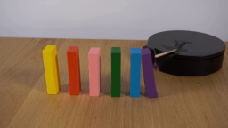
视觉工具实际返回图片 24
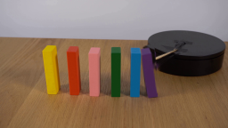
视觉工具实际返回图片 25
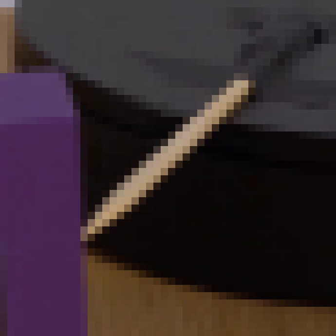
视觉工具实际返回图片 26

视觉工具实际返回图片 27
视觉工具实际返回图片 28
视觉工具实际返回图片 29
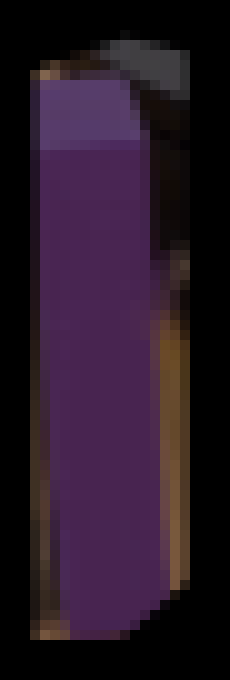
视觉工具实际返回图片 30
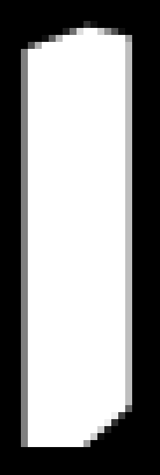
视觉工具实际返回图片 31
视觉工具实际返回图片 32
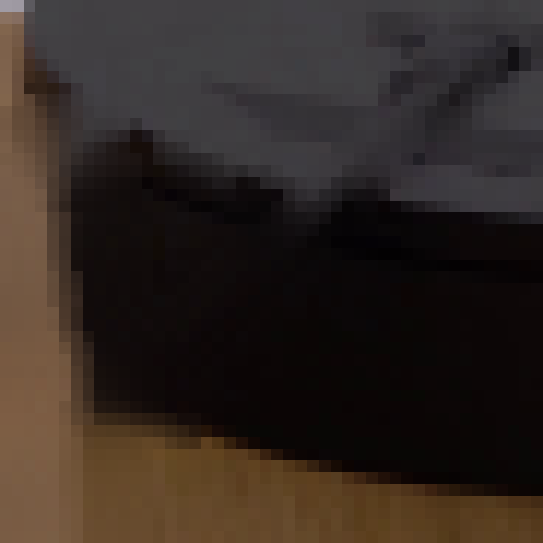
视觉工具实际返回图片 33
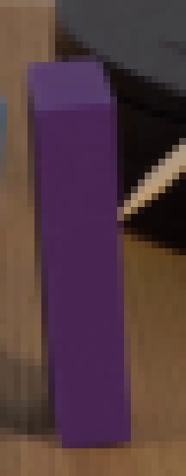
视觉工具实际返回图片 34
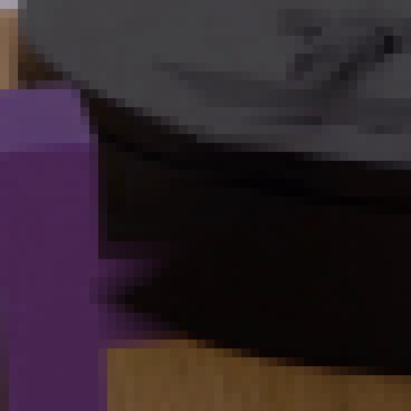
视觉工具实际返回图片 35
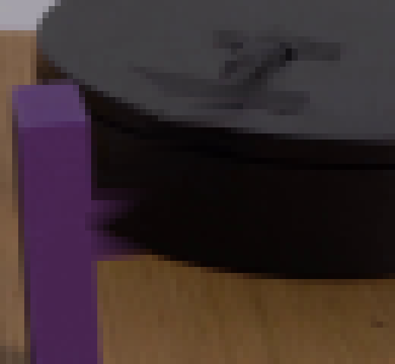
视觉工具实际返回图片 36
视觉工具实际返回图片 37
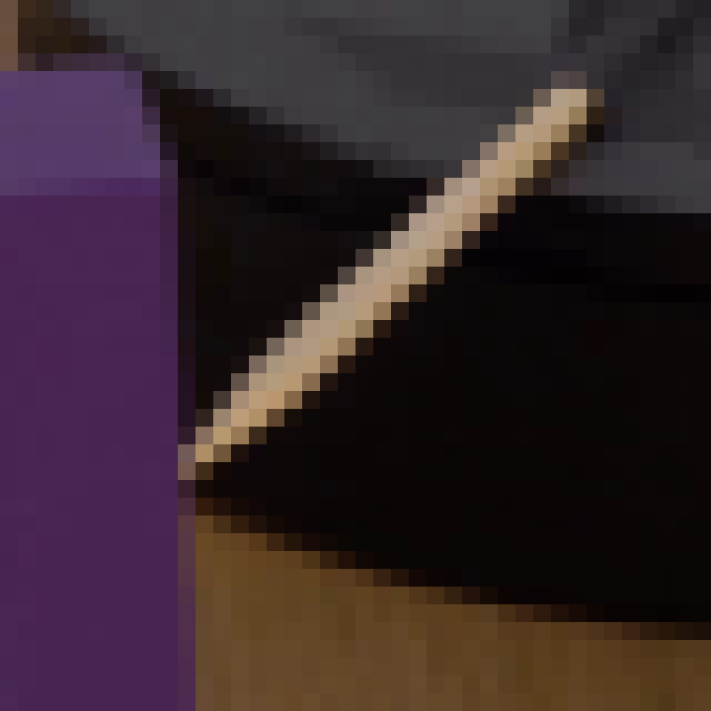
视觉工具实际返回图片 38
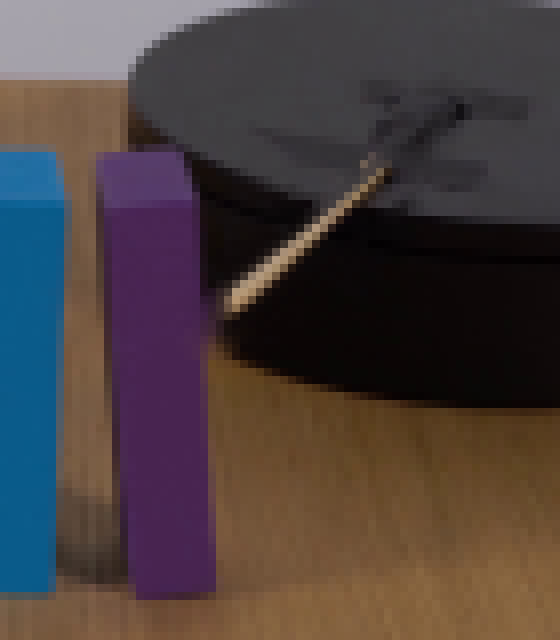
视觉工具实际返回图片 39
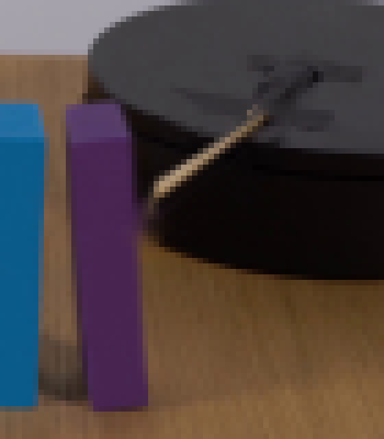
视觉工具实际返回图片 40
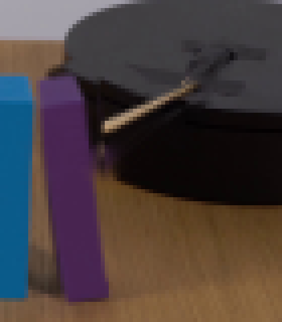
视觉工具实际返回图片 41
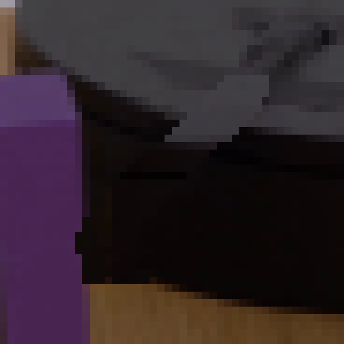
视觉工具实际返回图片 42
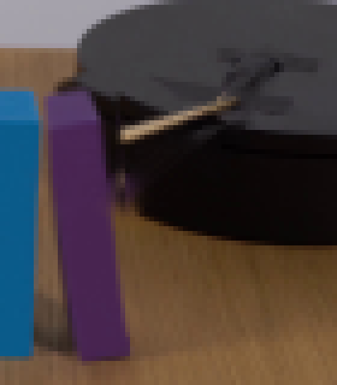
视觉工具实际返回图片 43

视觉工具实际返回图片 44
视觉工具实际返回图片 45
视觉工具实际返回图片 46
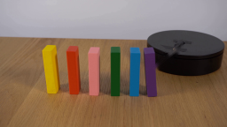
视觉工具实际返回图片 47
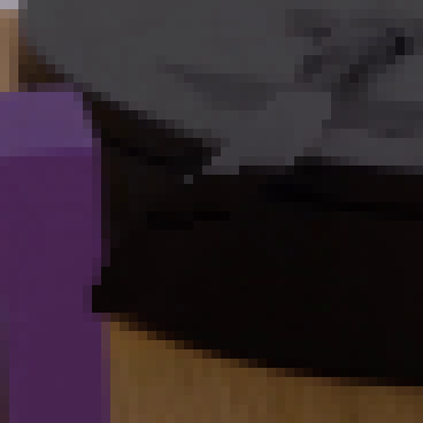
视觉工具实际返回图片 48
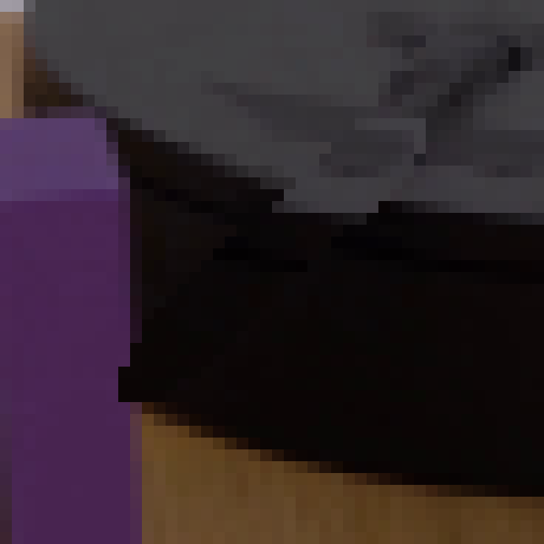
视觉工具实际返回图片 49
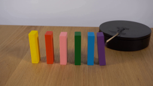
视觉工具实际返回图片 50
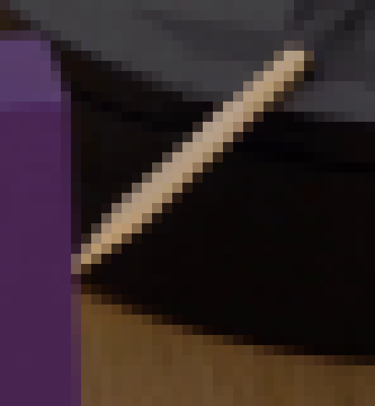
保存候选 1 份；完成命令 84 次；可验证图片返回 50 张。原始 API 响应与完整日志保留在本地。